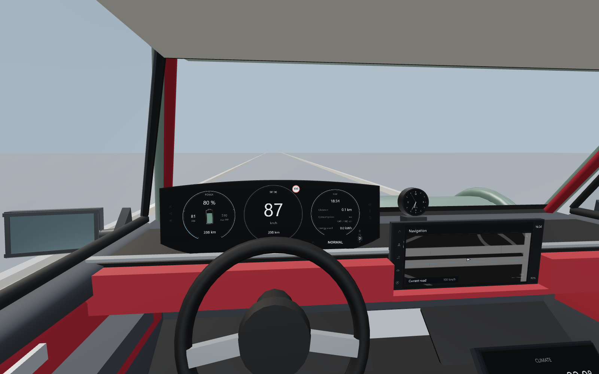
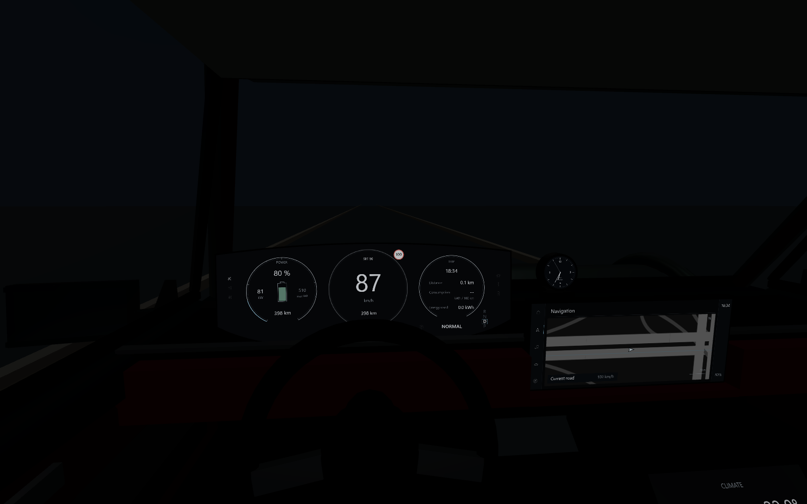
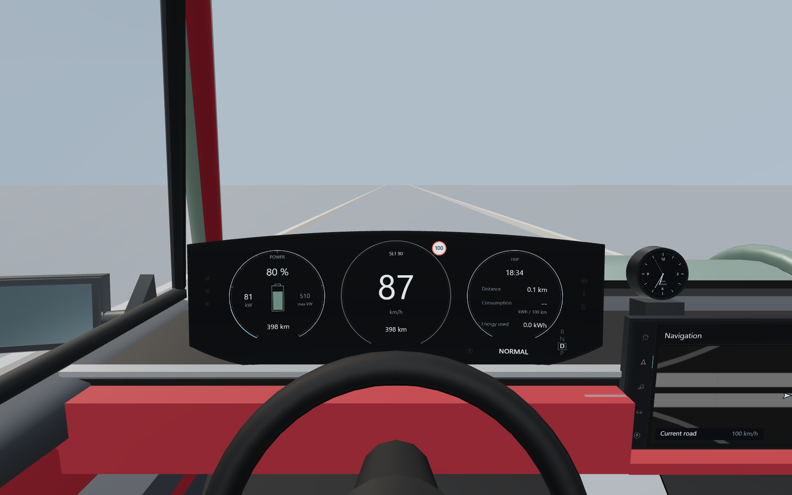
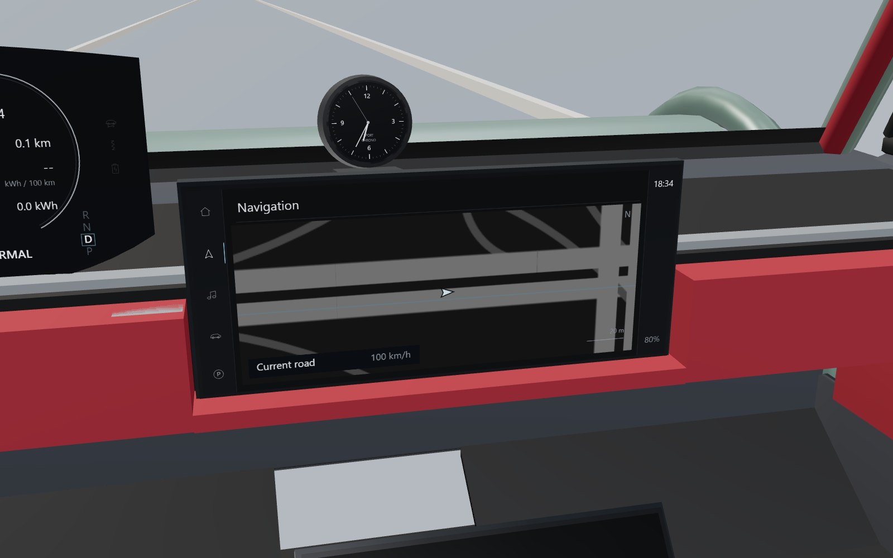
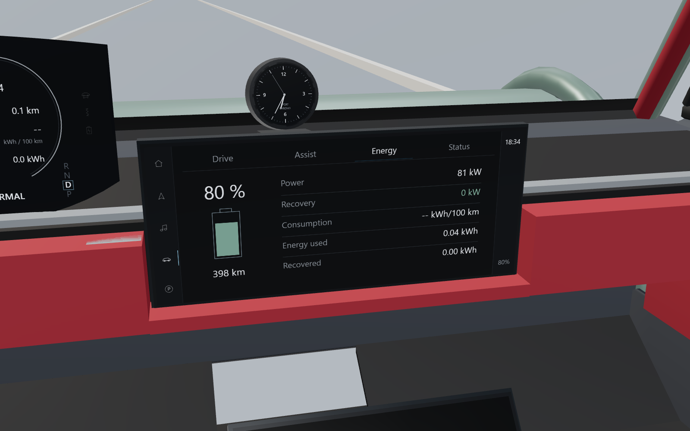
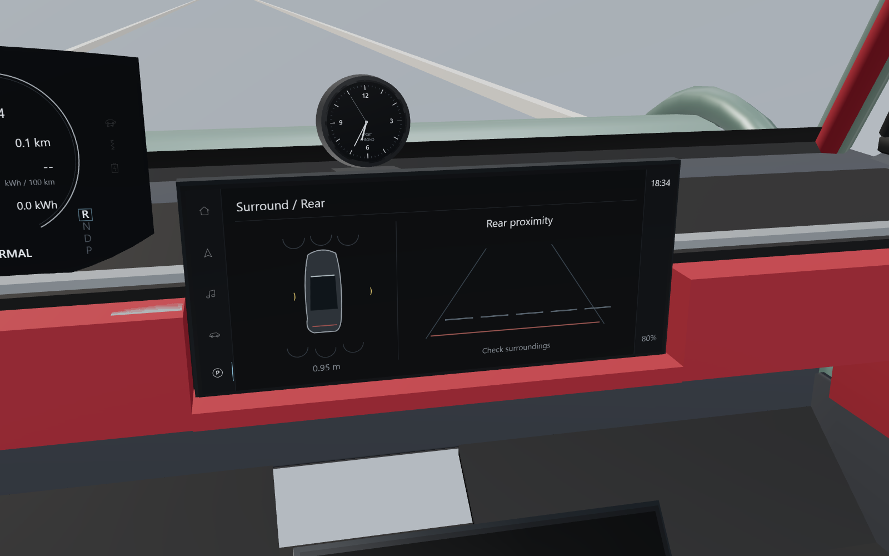
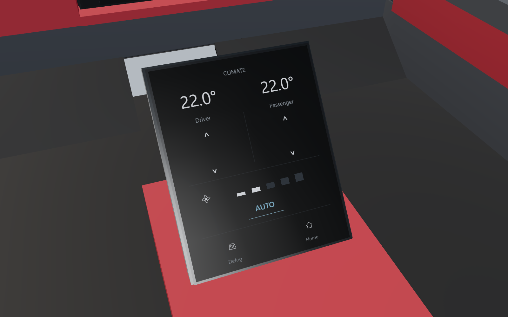
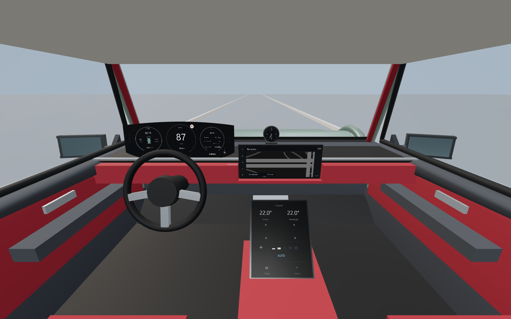

Taycan HMI V1
10 张实际 cockpit 透视渲染。周边为轻量验证场景，车舱使用项目 VehicleVisual。实施报告 · 测试结果

1 · 日间驾驶位

2 · 夜间驾驶位

3 · Primary Driving 仪表
4 · Assistance，现有 LCC controller ACTIVE
5 · Navigation 仪表，无路线时的驾驶信息

6 · PCM Navigation，共享地图与当前位置

7 · Vehicle / Energy，真实 EV telemetry

8 · Parking / 360，共享感知与合成后方距离示意

9 · 独立下方气候控制屏

10 · 仪表、Sport Chrono、PCM、下屏整体安装关系